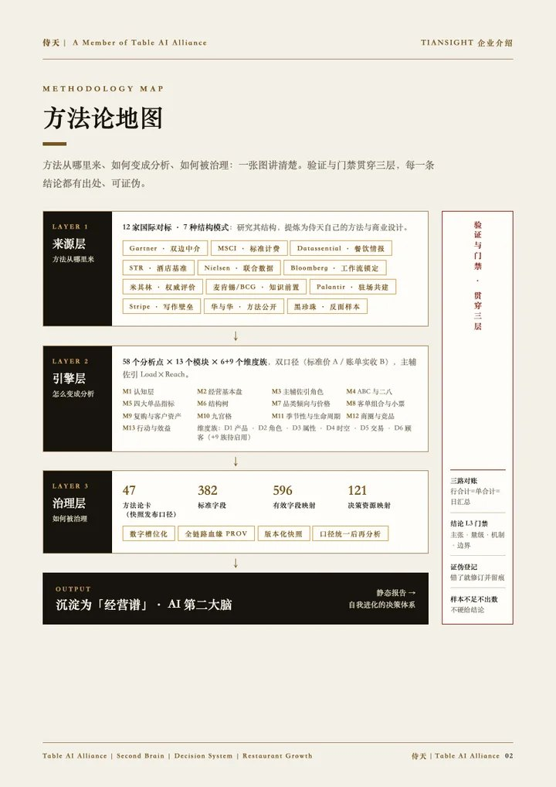
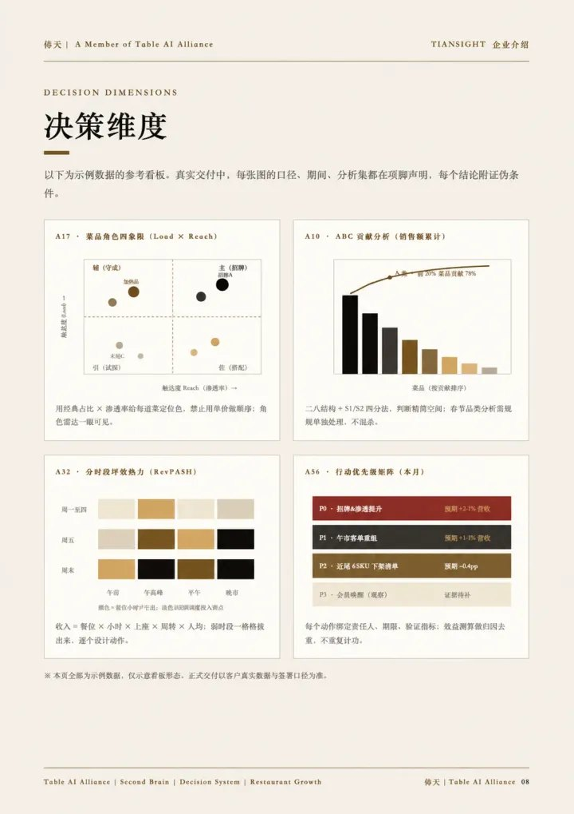
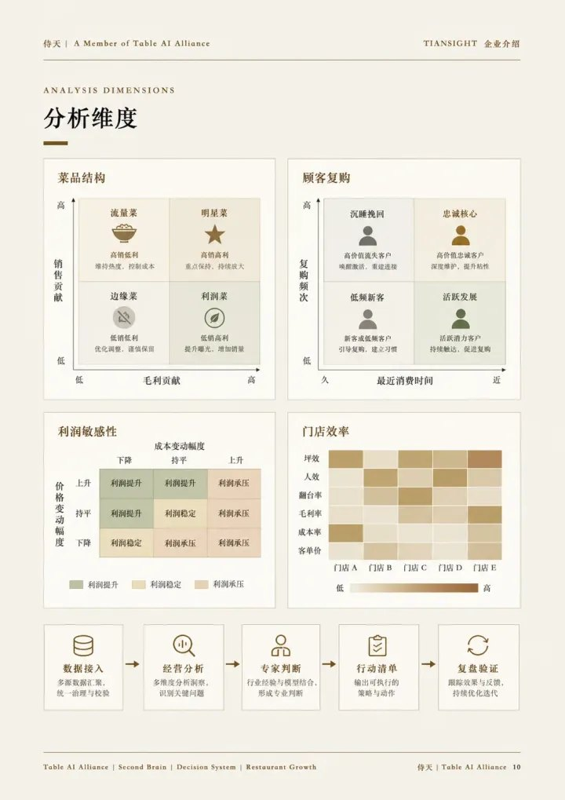

<section id="scr-report" data-transition="fade" style="background:#f4f0e7;color:#17130d;font-family:'Noto Serif SC', 'Songti SC', serif;padding:128px 128px 160px;display:flex;flex-direction:column;gap:40px;">
<div style="flex:1;display:flex;gap:56px;align-items:center"><div style="width:520px"><div style="display:flex;flex-direction:column;gap:20px"><p style="font-size:24px;letter-spacing:8px;color:#76551f">方法论 · 报告样张</p><h2 style="text-wrap:balance;font-size:48px;font-weight:600;line-height:1.2;letter-spacing:4px;color:#17130d">诊断报告，<br>逐页给出依据</h2><p style="align-self:flex-start;font-size:24px;color:#8c3228;border:1px solid #8c3228;border-radius:999px;padding:2px 18px">样张 · 模拟数据</p></div></div><div style="display:flex;gap:28px"><div style="display:flex;flex-direction:column;gap:12px"><p style="width:324px;font-size:26px;line-height:1.4;color:#3a332a">方法论地图</p></div><div style="display:flex;flex-direction:column;gap:12px"><p style="width:324px;font-size:26px;line-height:1.4;color:#3a332a">决策维度</p></div><div style="display:flex;flex-direction:column;gap:12px"><p style="width:324px;font-size:26px;line-height:1.4;color:#3a332a">分析维度</p></div></div></div>
<p style="position:absolute;left:128px;bottom:64px;width:900px;font-family:'Noto Serif', Georgia, serif;font-size:24px;letter-spacing:6px;color:#706758"><span style="color:#17130d;font-weight:700">T</span><span style="color:#a8842f;font-weight:400">I</span><span style="color:#17130d;font-weight:700">A</span><span style="color:#a8842f;font-weight:400">N</span><span style="color:#a8842f;font-weight:400">S</span><span style="color:#a8842f;font-weight:400">I</span><span style="color:#a8842f;font-weight:400">G</span><span style="color:#a8842f;font-weight:400">H</span><span style="color:#a8842f;font-weight:400">T</span><span style="color:#706758">　·　企业介绍</span></p><p style="position:absolute;right:128px;bottom:64px;width:240px;text-align:right;font-family:'IBM Plex Mono', 'Noto Serif SC', 'Courier New', monospace;font-size:24px;color:#706758">20 / 47</p><aside>方法论地图、决策维度与分析维度，每一页先写结论，再给依据。<br>报告样张为演示版本 · 模拟数据，非客户数据</aside>
</section>
